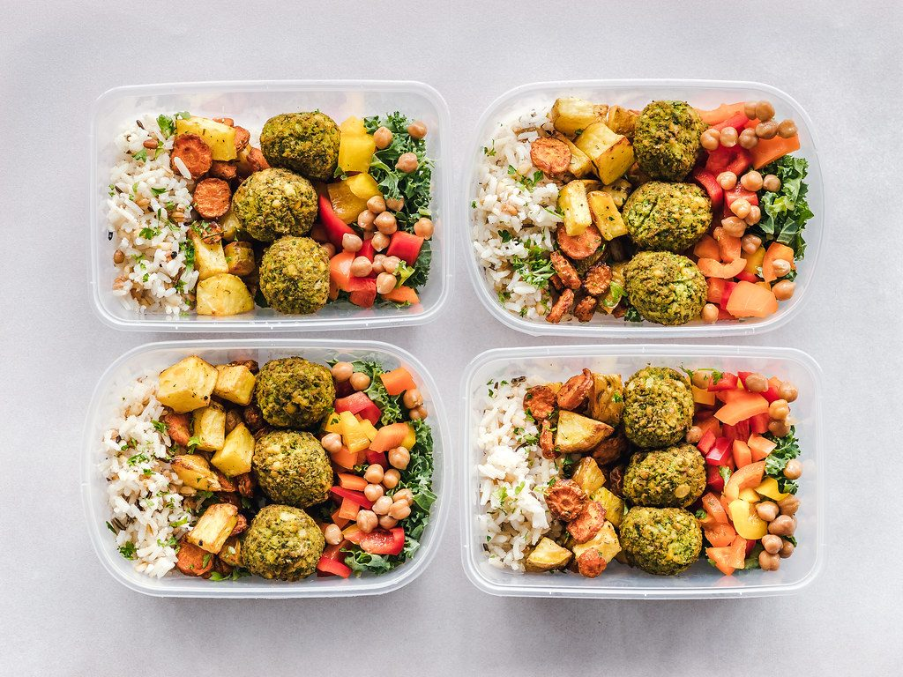

Most popular
7-Day High-Protein Meal Prep Plan
About 140 g of protein a day, five batch-cooked recipes, and a day-by-day plan that tells you exactly what to eat and when. Includes the full grocery list, a timed Sunday prep schedule, and storage guidance so nothing goes soggy by Thursday.
See the Full Plan